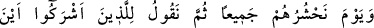
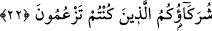
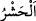
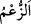
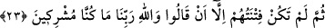
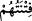

olanların durumlarını sen düşün!
22. Unutma o günü ki, onları hep birden toplayacağız; sonra da, Allah’a ortak
koşanlara: nerede boş yere davasını güttüğünüz ortaklarınız? diyeceğiz.
; insanları belirli bir yere toplamaktır. “
” genellikle boş ve yalan söz
demektir.
Âyetin mânâsı şöyledir: “Kıyamet gününde hepsini” bütün insanları bir araya
“toplarız sonra ortak koşanlara” özellikle müşriklere onları azarlamak ve kınamak
üzere insanların huzurunda “hani boş yere dâvâsını güttüğünüz” Allah’ın ortağı ve
şefaatçileri olduğunu iddia ettiğiniz “ortaklarınız” Allah’a şirk koştuğunuz ilahlarınız
“nerede?” deriz.” İşte o zaman sözle ifade edilemeyecek haller ve korkular meydana
gelir.
“ ” kelimesi, kıyâmet günü iki makam arasındaki aralığa işaret etmektedir. Çünkü
kıyâmet gününde duraklar vardır. Kıyâmet gününün uzunluğuna göre o duraklar arasında
aralıklar vardır.
23. Sonra onların mazeretleri, “Rabbimiz Allah hakkı için biz ortak koşanlar
olmadık!” demekten başka bir şey olmadı.
“Sonra içinde bulundukları zor durumdan dolayı onların “Rabbimiz Allah’a and
olsun ki biz ortak koşanlar değildik.” demekten başka çareleri kalmaz.” Âyette geçen
“
”den maksat ya küfürlerinin âkıbetidir. Yani, ömürleri boyunca sürdürdükleri ve
iftihar ettikleri küfürlerinin neticesi ancak: “Rabbimiz Allah’a and olsun ki biz ortak
koşanlar değildik” diyerek onu inkar ve ondan uzaklaşma olmuştur. Ya da “Biz ortak
koşanlardan değildik.” demelerinin “fitne” olarak ifade edilmesi, sözlerinin yalan
olması sebebiyledir. Sözlerinin fayda vermeyeceğini bildikleri halde böyle
söylemelerinin sebebi, hayret ve dehşete kapılmış olmalarından dolayıdır. Nitekim
cehennemde ebedi kalacaklarını kesin olarak bildikleri halde: “Rabbimiz! Bizi
buradan çıkar.” (el-Mü’minûn, 23/107) diyecekleri gibi.